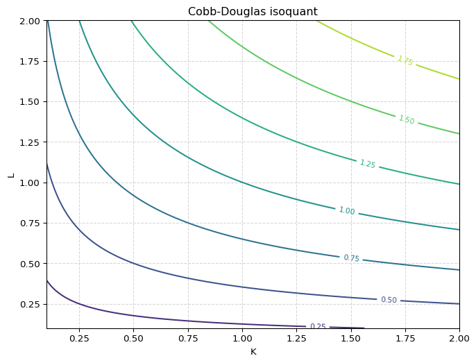

# 1student = "Bob" # 不能以数字开头
# class = "Math" # 不能使用关键字
# student-name = "Tom" # 不能包含减号
# t&2 = 30 # 特殊符号Python 基础
这一部分，将简要回归Python语言的基本内容，包括变量的类型、条件语句、循环、自定义函数和类等内容。
变量与数据类型
变量是用来存储数据的“容器”，可以赋不同类型的值。Python常见数据类型有：整数(int)、浮点数(float)、字符串(str)、布尔(bool)等。
变量赋值
变量赋值把一个具体的值存储到一个变量中，方便后续使用和操作。要注意变量命名的规则：
- 变量名只能包含字母、数字和下划线，且不能以数字开头
- 区分大小写（如：age 和 Age 是不同变量）
- 不可使用Python关键字作为变量名（如：if, for, class 等）
- 建议使用有意义的英文单词，遵循小写加下划线的风格（如：student_name）
如果命名方式不符合要求，软件将返回错误。将下面例子中表示注释的去掉，试运行语句，看提示的错误类型是什么？
例如，正确的变量名：
name = "Alice"
age = 21
province = "Jiang Su"保留关键词
上面的class，属于软件内部保留的33个关键词之一，注意在命名时应避免与关键词冲突：
import keyword
print(keyword.kwlist)['False', 'None', 'True', 'and', 'as', 'assert', 'async', 'await', 'break', 'class', 'continue', 'def', 'del', 'elif', 'else', 'except', 'finally', 'for', 'from', 'global', 'if', 'import', 'in', 'is', 'lambda', 'nonlocal', 'not', 'or', 'pass', 'raise', 'return', 'try', 'while', 'with', 'yield']常见数据类型：
整数（int）：用于表示整数类型的数据。
可以通过type()函数查看一个对象的类型。
a = -5
print(type(a))
#
b = 10
c = b/a
type(c)<class 'int'>float浮点数（float）：用于表示带小数点的数值
pi = 3.14159
radius = 1.75
area = pi * radius **2
print(type(pi))
print(area)<class 'float'>
9.621119375字符串（str）：用于表示文本数据
可以用双引号或者 单引号定义字符串。当字符串较长时，可以用三引号进行定义。例如：
sentence = "Python's syntax is easy to learn."
multiline = """这个句子
被我
分成了几行。这样
看起来，像诗一样。
"""字符串有许多属性和方法，如 Table 1 所示：
| 方法 | 功能说明 | 示例 |
|---|---|---|
s.lower() |
转换为小写 | "Hello".lower() → "hello" |
s.upper() |
转换为大写 | "hello".upper() → "HELLO" |
s.capitalize() |
首字母大写，其余小写 | "hello world".capitalize() → "Hello world" |
s.title() |
每个单词首字母大写 | "hello world".title() → "Hello World" |
s.strip() |
去除字符串首尾空白字符 | " hello ".strip() → "hello" |
s.lstrip() |
去除左侧空白 | " hello".lstrip() → "hello" |
s.rstrip() |
去除右侧空白 | "hello ".rstrip() → "hello" |
s.replace(old, new) |
替换子串 | "banana".replace("a", "o") → "bonono" |
s.find(sub) |
查找子串位置，找不到返回 -1 |
"hello".find("l") → 2 |
s.count(sub) |
统计子串出现次数 | "banana".count("a") → 3 |
s.startswith(prefix) |
是否以指定前缀开头 | "hello".startswith("he") → True |
s.endswith(suffix) |
是否以指定后缀结尾 | "hello".endswith("lo") → True |
s.split(sep) |
按分隔符拆分字符串 | "a,b,c".split(",") → ["a", "b", "c"] |
sep.join(iterable) |
使用分隔符连接字符串序列 | ",".join(["a", "b", "c"]) → "a,b,c" |
注意，当对字符串使用某一方法时，虽然结果显示了变化，并没有改变原本对字符串。如果要保存结果可以赋值。
# 例：将日期字符串按“-”分割成年、月、日
date_str = "2024-06-01"
parts = date_str.split("-")
year, month, day = parts
print(f"年份：{year}，月份：{month}，日期：{day}")
# 例：用join方法将列表中的单词拼接成一句话
words = ["Python", "is", "fun"]
sentence = "$#$_".join(words)
print(sentence) 年份：2024，月份：06，日期：01
Python$#$_is$#$_fun布林类型（bool）：只有True和False两个值，常用于条件判断
name = "Jane"
age = 20
score = 57
is_adult = age >= 18
has_passed = score >= 60
print(type(is_adult)) # <class 'bool'>
print(f"是否成年：{is_adult}")
print(f"是否及格：{has_passed}")<class 'bool'>
是否成年：True
是否及格：Falseprint与f-string
带引号的字符
上面的例子中，常用print()函数将内容输出到屏幕，它是Python中最常用的输出语句，它可以输出字符串、变量、表达式等，并支持格式化输出。
在Python语言中，字符可以使用单引号或者双引号表示，在输出带引号的字符串时，可以利用该特点。例如
# 输出带有引号的字符串
print('She said, "Hello!"') # 外单内双
print("It's a nice day.") # 外双内单
# 如果字符串本身包含同样的引号，可以用转义符\避免冲突
print('It\'s a nice day.') # 单引号中包含单引号
print("She said, \"Hello!\"") # 双引号中包含双引号
# 三引号可以包含单双引号和多行内容
print("""他说："It's OK!" """)She said, "Hello!"
It's a nice day.
It's a nice day.
She said, "Hello!"
他说："It's OK!" 格式化输出 f-string
f-string（格式化字符串字面量）是 Python 3.6 及以上版本提供的一种字符串格式化方式，它让我们可以在字符串中直接嵌入变量或表达式。
输出结果时也可以进行数学运算：
year = 2024
GDP_per_capita = 95749
growth = 0.051
my_string = f"{year}年，人均国内生产总值为{GDP_per_capita/10000:.3f}万元，比去年增长{growth:.3%}"
print(my_string)2024年，人均国内生产总值为9.575万元，比去年增长5.100%运算符与表达式
运算符用于对数据进行各种操作，主要包括以下几类：
- 算术运算符：
+（加），-（减），*（乘），/（除），//（整除），%（取余），**（幂） - 比较运算符：
==（等于），!=（不等于），>（大于），<（小于），>=（大于等于），<=（小于等于） - 逻辑运算符：
and（与），or（或），not（非） - 赋值运算符：
=（赋值），+=，-=，*=，/=等 - 成员运算符：
in，not in（判断元素是否属于序列） - 身份运算符：
is，is not（判断两个对象是否为同一对象）
下面分别介绍常用的运算符及其用法。
算术运算符
算术运算符包括：加法（+）、减法（-）、乘法（*）、除法（/）、整除（//）、取余（%）、幂运算（**）：
a = 15
b = 4
print("a // b =", a // b)
print("a % b =", a % b)
print("a ** b =", a ** b) a // b = 3
a % b = 3
a ** b = 50625比较运算符
比较运算符用于比较两个值，结果为布尔类型（True或False）
print("a > b:", a > b)
print("a == b:", a == b)
print("a != b:", a != b) a > b: True
a == b: False
a != b: True逻辑运算符
逻辑运算符用于连接多个条件表达式，常用于复合条件判断。例如：
x = 8
y = 3
#
print((x > 5) and (y < 5))
print((x < 5) or (y < 5))
print(not (x > y)) True
True
False赋值运算符
赋值运算符用于给变量赋值或在原有基础上进行运算后赋值:
x = 10
x += 5
x -= 3
x *= 2
x /= 4
x //= 2
x %= 2
x **= 3
#
print(x)1.0成员运算符
成员运算符用于判断某个元素是否属于某个序列，如列表、元组、字符串等。例如：
for i in range(5):
print(i)0
1
2
3
4控制结构：条件与循环
条件语句
条件语句（if语句）用于根据条件判断执行不同的代码块，基本结构：
# if 条件:
# 代码块1
# elif 其他条件:
# 代码块2
# else:
# 代码块3以世界银行经济体收入分组标准为例：
世界银行按照人均国民收入把世界各经济体分成四组，如 Table 2 所示，中、低收入国家被称为发展中国家，高收入国家被称为发达国家。
| 经济体分组 | 划分标准（人均国民总收入） |
|---|---|
| 低收入经济体 | 1145 美元以下 |
| 中等偏下收入经济体 | 1146—4515 美元 |
| 中等偏上收入经济体 | 4516—14005 美元 |
| 高收入经济体 | 14005 美元以上 |
可以使用嵌套条件语句来进行判别：
gni = 13660
if gni <= 1135:
economy = "低收入经济体"
elif gni <= 4465:
economy = "中等偏下收入经济体"
elif gni <= 13845:
economy = "中等偏上收入经济体"
else:
economy = "高收入经济体"
print(f"人均国民总收入为 {gni} 美元，属于：{economy}")人均国民总收入为 13660 美元，属于：中等偏上收入经济体例： BMI指数
再来看一个计算BMI（Body Mass Index）指数的例子： \[ BMI = \frac{weight(kg)}{height(m)^{2}} \]
height = 1.75
weight = 75
# 计算BMI
bmi = weight / (height ** 2)
if bmi < 18.5:
status = "偏瘦"
elif bmi < 24:
status = "正常"
elif bmi < 28:
status = "超重"
else:
status = "肥胖"
print(f"BMI = {bmi:.2f}，{status}")BMI = 24.49，超重for循环与range
for循环用于遍历序列（如列表、字符串、元组等）或按照一定范围循环，经常与range()一起使用。
fruits = ["apple", "banana", "cherry"]
for fruit in fruits:
print(fruit)
#
total = 0
for i in range(1, 101):
total += i
print("1到100的和为：", total)apple
banana
cherry
1到100的和为： 5050while循环
while循环是一种基于条件判断的循环结构。当条件为True时，循环体会反复执行，直到条件变为False为止。
while循环要注意循环变量的更新，否则可能会造成死循环。
# 例1：输出1到5
i = 1
while i <= 5:
print(i)
i += 1
# 例2：计算1到100的和
total = 0
n = 1
while n <= 100:
total += n
n += 1
print("1到100的和为：", total)1
2
3
4
5
1到100的和为： 5050容器类型：列表、字典、元组、集合
列表（list）、字典（dict）、元组（tuple）、集合（set）是Python中常用的容器类型。
- 列表：用[]定义，有序可变
- 字典：用{}定义，键值对结构
- 元组：用()定义，有序不可变
- 集合：用set()或{}定义，无序不重复
列表
Table 3 中列出了常用的列表方法，假设初始列表为lst = [1, 2, 3]：
| 方法 | 功能说明 | 示例 | 结果 |
|---|---|---|---|
append(x) |
在列表末尾添加元素 x |
lst.append(4) |
[1, 2, 3, 4] |
extend(iterable) |
将可迭代对象中的元素添加到列表末尾 | lst.extend([4, 5]) |
[1, 2, 3, 4, 5] |
insert(i, x) |
在索引 i 处插入元素 x |
lst.insert(1, 10) |
[1, 10, 2, 3] |
remove(x) |
删除列表中第一个值为 x 的元素 |
lst.remove(2) |
[1, 3] |
pop([i]) |
移除并返回指定索引的元素，默认删除最后一个 | lst.pop() / lst.pop(0) |
3 / 1 |
clear() |
清空列表所有元素 | lst.clear() |
[] |
index(x) |
返回第一个值为 x 的索引 |
lst.index(3) |
2 |
count(x) |
返回元素 x 在列表中出现的次数 |
lst.count(2) |
1 |
sort() |
原地排序（默认升序） | lst.sort() |
[1, 2, 3] |
sort(reverse=True) |
原地降序排序 | lst.sort(reverse=True) |
[3, 2, 1] |
reverse() |
原地反转列表顺序 | lst.reverse() |
[3, 2, 1] |
copy() |
返回列表的浅拷贝 | new_lst = lst.copy() |
[1, 2, 3] |
# 列表（list）：有序、可变的元素集合，用[]表示
numbers = [10, 20, 30, 40]
fruits = ["apple", "banana", "cherry"]
# 访问元素（索引从0开始）
print(numbers[0]) # 10
print(fruits[-1]) # cherry（倒数第1个）
# 修改元素
numbers[1] = 25
print(numbers) # [10, 25, 30, 40]
# 添加元素
fruits.append("orange") # 末尾添加
fruits.insert(1, "pear") # 指定位置插入
print(fruits) # ['apple', 'pear', 'banana', 'cherry', 'orange']
# 删除元素
del numbers[2] # 按索引删除
fruits.remove("banana") # 按值删除
print(numbers) # [10, 25, 40]
print(fruits) # ['apple', 'pear', 'cherry', 'orange']
# 列表切片
print(numbers[1:]) # [25, 40]
print(fruits[:2]) # ['apple', 'pear']
# 遍历列表
for fruit in fruits:
print(fruit)
# 列表常用方法
print(len(numbers)) # 长度
print(max(numbers)) # 最大值
print(min(numbers)) # 最小值
print(numbers.count(25)) # 出现次数
numbers.sort() # 排序
print(numbers)10
cherry
[10, 25, 30, 40]
['apple', 'pear', 'banana', 'cherry', 'orange']
[10, 25, 40]
['apple', 'pear', 'cherry', 'orange']
[25, 40]
['apple', 'pear']
apple
pear
cherry
orange
3
40
10
1
[10, 25, 40]# 元组（tuple）：有序、不可变的元素集合，用()表示
point = (3, 4)
colors = ("red", "green", "blue")
# 访问元素
print(point[0]) # 3
print(colors[-1]) # blue
# 元组不可修改
# point[1] = 5 # 会报错
# 单元素元组要加逗号
single = (5,)
print(type(single)) # <class 'tuple'>
# 元组可以用于多变量赋值
x, y = point
print(x, y) # 3 4
# 遍历元组
for color in colors:
print(color)3
blue
<class 'tuple'>
3 4
red
green
blue例：计算净现值
如果某项资产在多个时间周期内支付一系列收益流，那么我们可以使用贴现率来计算这整个收益序列对消费者的当前价值。
更一般地说，我们用索引\(t\)来表示每一个离散的时间周期（例如年、月、日），其中“今天”为第 \(t = 0\) 期，资产一共存在 \(T\) 个时间周期。
我们用 \(y_t\) 表示第 \(t\) 期的收益，并假设这些收益现在是已知的。
如果贴现因子为 \(r\ge 0\)，那么消费者对第 \(t\) 期收到的收益 \(y_t\) 的当前“价值”是：
\[ \frac{1}{(1 + r)^{t}}y_t \]
需要注意的是，当 \(t = 0\) 时，当前价值就是 \(y_0\)。
基于这一逻辑，我们可以用一个求和表达式来表示整条收益序列的总价值：
\[ P_{0} = \sum_{t=0}^{T} (\frac{1}{1+r})^{t}y_{t} \]
我们将假设的收益序列保存为列表： y = [-100, 80, 60, 50]，贴现率假设为0.05：
y = [-100, 80, 60, 50]
r = 0.05
P0 = 0
for t in range(len(y)):
P0 = P0 + y[t] / (1 + r) ** t
print(f"The Total Present Value = ：{P0:.2f}")The Total Present Value = ：73.80字典的键值对操作
字典（dict）是一种用于存储键值对的数据结构。每个元素由“键”（key）和“值”（value）组成，键必须唯一且不可变，值可以是任意类型。 字典用大括号{}表示，键和值之间用冒号:分隔，多个键值对之间用逗号,分隔。
# 定义字典
person = {"name": "Tom", "age": 18, "gender": "male"}
print(person)
# 访问字典的值（通过键）
print(person["name"]) # 输出：Tom
# 添加或修改元素
person["city"] = "Beijing" # 添加新键值对
person["age"] = 20 # 修改已有键的值
print(person)
# 遍历字典
for key in person:
print(key, person[key])
# 常用方法
print(person.keys()) # 所有键
print(person.values()) # 所有值
print(person.items()) # 所有键值对
print("name" in person) # 判断键是否存在{'name': 'Tom', 'age': 18, 'gender': 'male'}
Tom
{'name': 'Tom', 'age': 20, 'gender': 'male', 'city': 'Beijing'}
name Tom
age 20
gender male
city Beijing
dict_keys(['name', 'age', 'gender', 'city'])
dict_values(['Tom', 20, 'male', 'Beijing'])
dict_items([('name', 'Tom'), ('age', 20), ('gender', 'male'), ('city', 'Beijing')])
True应用：利用字典进行词频统计
统计一段文本中每个单词出现的次数，例如统计下面英文歌词代词出现的次数。首先将字母转化为小写字母，然后利用字符的切分方法.split()，将结果保存在字典freq之中，然后按词频排序，注意使用了lambda函数的方法。
text = """Generals gathered in their masses
Just like witches at black masses
Evil minds that plot destruction
Sorcerer of death's construction
In the fields, the bodies burning
As the war machine keeps turning
Death and hatred to mankind
Poisoning their brainwashed minds
Oh, Lord, yeah
Politicians hide themselves away
They only started the war
Why should they go out to fight?
They leave that role to the poor, yeah
Time will tell on their power minds
Making war just for fun
Treating people just like pawns in chess
Wait 'til their judgement day comes, yeah
Now in darkness, world stops turning
Ashes where their bodies burning
No more war pigs have the power
Hand of God has struck the hour
Day of judgement, God is calling
On their knees, the war pigs crawling
Begging mercy for their sins
Satan laughing, spreads his wings
Oh, Lord, yeah
"""
words = text.lower().split()
freq = {}
for word in words:
if word in freq: # 判断单词是否已在字典中
freq[word] += 1
else:
freq[word] = 1
sorted_freq = sorted(freq.items(),
key=lambda item: item[1],
reverse=True)
for word, count in sorted_freq[:10]:
print(f"{word}: {count}")the: 8
their: 7
war: 5
in: 4
yeah: 4
just: 3
minds: 3
of: 3
to: 3
they: 3函数与模块
内置函数的调用
Python内置函数是系统自带的、可以直接使用的函数，无需导入模块。常见内置函数有：abs(), len(),max(), min(), sum(), type(), int(), float(), str(), list(), dict(), range() 等
# 例1：abs()
print(abs(-10))
# 例2：len() 计算长度
lst = [1, 2, 3, 4]
print(len(lst))
# 例3：max() 和 min() 求最大最小值
print(max(5, 8, 2))
print(min([7, 3, 9]))
# 例4：sum() 求和
print(sum([1, 2, 3]))
# 例5：type() 查看类型
print(type("hello"))
# 例6：int(), float(), str() 类型转换
print(int("123"))
print(float("3.14"))
print(str(456)) 10
4
8
3
6
<class 'str'>
123
3.14
456自定义函数
自定义函数使用def关键字，指定函数名、参数列表和函数体。下面是几个简单的自定义函数的例子。
def greet(name):
print(f"Hello, {name}!")
greet("Alice")Hello, Alice!带返回值的函数，如计算平均数
def mean(numbers):
total = sum(numbers)
N = len(numbers)
answer = total / N
return answer
nums = [3, 8, 1, 6]
print(mean(nums))4.5带默认参数的函数
def power(base, exponent=2):
return base ** exponent
print(power(4))
print(power(2, 3)) 16
8函数也可以有多个返回值（返回元组）
def min_max(numbers):
return min(numbers), max(numbers)
nums = [3, 8, 1, 6]
min, max = min_max(nums)另外一个例子计算商和余数:
def divide(a, b):
quotient = a // b
remainder = a % b
return quotient, remainder
q, r = divide(17, 5)可变参数：*args 接收任意数量的位置参数，类型为元组
def total(*args):
return sum(args)
print(total(1, 2, 3))
print(total(5, 10)) 6
15关键字参数：**kwargs 接收任意数量的关键字参数，类型为字典
def show_info(**kwargs):
for key, value in kwargs.items():
print(f"{key}: {value}")
show_info(name="Alice", age=20)name: Alice
age: 20例：世界银行经济体分组（续）
将前面例子中的if语句代码，赋值粘贴至某一个AI大模型平台，输入提示：“将下面的Python代码定义为一个函数”。
def classify_economy(gni):
if gni <= 1135:
economy = "低收入经济体"
elif gni <= 4465:
economy = "中等偏下收入经济体"
elif gni <= 13845:
economy = "中等偏上收入经济体"
else:
economy = "高收入经济体"
return economy
e = classify_economy(13500)
print(e)中等偏上收入经济体自定义函数常与其他功能结合使用，例如Pandas库的df.apply()方法。下面的例子首先从World Bank数据库下载2024年GDP per capita (current US$)数据，删除缺失值，然后应用自定义的classify_economy()函数：
import pandas as pd
import wbgapi as wb
gdp_pc_2024 = wb.data.DataFrame("NY.GDP.PCAP.CD", time = 2024)
gdp_pc_2024 = gdp_pc_2024.dropna()
gdp_pc_2024['NY.GDP.PCAP.CD'].apply(classify_economy)economy
AFE 中等偏下收入经济体
AFW 中等偏下收入经济体
AGO 中等偏下收入经济体
ALB 中等偏上收入经济体
AND 高收入经济体
...
XKX 中等偏上收入经济体
YEM 低收入经济体
ZAF 中等偏上收入经济体
ZMB 中等偏下收入经济体
ZWE 中等偏下收入经济体
Name: NY.GDP.PCAP.CD, Length: 232, dtype: object例：BMI指数函数
同样，也可以将上面计算BMI指数的过程，定义为一个函数：
def bmi(height, weight):
"""计算BMI指数并返回数值和健康状况"""
bmi = weight / (height ** 2)
if bmi < 18.5:
status = "偏瘦"
elif bmi < 24:
status = "正常"
elif bmi < 28:
status = "超重"
else:
status = "肥胖"
return bmi, status
# 示例调用
bmi, status = bmi(1.75, 75)
print(f"BMI = ：{bmi:.2f}，{status}")BMI = ：24.49，超重例：定义一个集中度函数
令 \(s_i\)表示企业 \(i\) 的市场份额，定义一个函数，计算：
产业集中度指数（ \(CR_{n}\) ） \[ CR_{4} = \sum_{i=1}^{4}s_{i} \]
和赫芬达尔指数 \[ H_{i} = \sum_{i=1}^{n}s_{i}^{2} \]
def concentration_index(sales, top_n=4):
"""
计算前N家企业的集中度（Cn）和赫芬达尔-赫希曼指数（HHI）。
sales: 销售收入列表
top_n: 前N家，默认为4（C4），可设为8（C8）
返回：(Cn, HHI)
"""
total = sum(sales)
if total == 0:
return 0, 0
sorted_sales = sorted(sales, reverse=True)
cn = sum(sorted_sales[:top_n]) / total
hhi = sum((s / total) ** 2 for s in sales)
return cn, hhi
# 示例
sales = [100, 80,85, 60, 40, 30, 20, 10, 5, 3, 2]
concentration_index(sales, top_n=4)(0.7471264367816092, 0.15993129871845688)例：定义Cobb-Douglas函数
Cobb-Douglas生产函数是最常见的设定，例如一个规模报酬不变的CD函数表示为： \[ Y = AK^{\alpha}L^{1-\alpha} \]
其中，\(\alpha\) 表示资本的产出弹性，\(A\) 表示全要素生产率。
import numpy as np
import matplotlib.pyplot as plt
def cobb_douglas(K, L, alpha = 1/3, A = 1):
output = A * K**alpha * L**(1 - alpha)
return output
cobb_douglas(K=1, L=0.5)0.6299605249474366从微观经济学内容我们知道，等产量曲线是带来相同产出的要素组合 \((K, L)\) 形成的曲线，可以应用matplotlib中的contour函数绘制上面函数定义的等产量曲线：
# 生成K和L的网格
K = np.linspace(0.1, 2, 100)
L = np.linspace(0.1, 2, 100)
K_grid, L_grid = np.meshgrid(K, L)
# 利用函数计算产量
Y = cobb_douglas(K_grid, L_grid)
# 绘图
fig, ax = plt.subplots(figsize=(8, 6))
contours = ax.contour(K_grid, L_grid, Y, levels=8, cmap='viridis')
ax.clabel(contours, inline=True, fontsize=8)
ax.set_xlabel('K')
ax.set_ylabel('L')
ax.set_title('Cobb-Douglas isoquant')
ax.grid(True, linestyle='--', alpha=0.5)
plt.show()
模块的导入与使用
Python的模块（module）是包含一组功能的代码文件，可以通过import语句导入并使用其中的函数、变量等。分为三类： - python自带模块，不需要安装，直接import载入就可以了，如math包； - 第三方模块，通常需要下载安装，然后载入，如numpy，scipy等； - 自定义模块，自己写的实现某些功能的py文件的集合。
import math
print(math.sqrt(16))
print(math.pi)
#
from random import randint
print(randint(1, 10))
#
import datetime as dt
now = dt.datetime.now()
print(now)4.0
3.141592653589793
7
2025-07-28 23:15:30.087236可以把自定义的函数等保存在.py格式等脚本文件中，自定义模块。例如，在文件夹pyfiles中my_module.py文件保存了一个计算BMI的函数，我们载入该函数然后进行计算：
from pyfiles.my_module import bmi_index
# 示例调用
bmi, status = bmi_index(1.75, 75)
print(f"BMI = {bmi:.2f}")
print(f"健康状况：{status}")BMI = 24.49
健康状况：超重面向对象的编程
什么是类
类（class）是面向对象编程（OOP）的核心概念，用于描述具有相同属性和方法的一类对象的模板或蓝图。 对象（object）是类的实例，拥有类定义的属性和方法。
定义一个简单的类
下面定义一个类Student，它具有两个属性name、age，和一个方法introduce()：
class Student:
# 构造方法，初始化属性
def __init__(self, name, age):
self.name = name
self.age = age
# 方法
def introduce(self):
print(f"Hello，My name is {self.name}，I'm {self.age} years old.")
#
stu1 = Student("Alice", 20)
stu2 = Student("Bob", 22)
#
stu1.introduce()
stu2.introduce()Hello，My name is Alice，I'm 20 years old.
Hello，My name is Bob，I'm 22 years old.例：定义一个局部均衡分析模型
微观经济学中，简单的局部均衡市场模型表示为: \[ \begin{cases} Q_{D} = a - b\times P \\ Q_{S} = c + d\times P \\ Q_{D} = Q_{S} \end{cases} \]
我们定义一个类Market，将参数定义为属性，将需求、供给和均衡条件定义为三个方法：
demand计算给定价格的需求量；supply计算给定价格的供给量equilibrium计算均衡价格和均衡数量;
class Market:
def __init__(self, a, b, c, d):
"""
Qd = a - b*P
Qs = c + d*P
"""
self.a = a
self.b = b
self.c = c
self.d = d
def demand(self, P):
return self.a - self.b * P
def supply(self, P):
return self.c + self.d * P
def equilibrium(self):
"""
Qd = Qs
"""
# a - b*P = c + d*P
# (a - c) = (b + d)*P
P_eq = (self.a - self.c) / (self.b + self.d)
Q_eq = self.demand(P_eq)
return P_eq, Q_eq
#
market = Market(a=100, b=2, c=20, d=3)
P_star, Q_star = market.equilibrium()
print(f"Equilibrium Price = {P_star:.2f}")
print(f"Equilibrium Quantity = {Q_star:.2f}")Equilibrium Price = 16.00
Equilibrium Quantity = 68.00可以利用定义的market类中的方法绘制需求曲线和供给曲线：
import numpy as np
import matplotlib.pyplot as plt
# 生成价格区间
P = np.linspace(0, 50, 200)
Qd = [market.demand(p) for p in P]
Qs = [market.supply(p) for p in P]
# 绘图
fig, ax = plt.subplots(figsize=(8, 6))
ax.plot(Qd, P, label="Demand Qd", color="blue")
ax.plot(Qs, P, label="Supply Qs", color="orange")
ax.scatter(Q_star, P_star, color="red", zorder=5)
ax.annotate(f"Equilibrium\n(Q={Q_star:.1f}, P={P_star:.1f})",
xy=(Q_star, P_star), xytext=(Q_star+10, P_star+5),
arrowprops=dict(arrowstyle="->", color="red"))
ax.set_xlabel("Q")
ax.set_ylabel("P")
ax.legend()
ax.grid(True, linestyle="--", alpha=0.5)
plt.show()